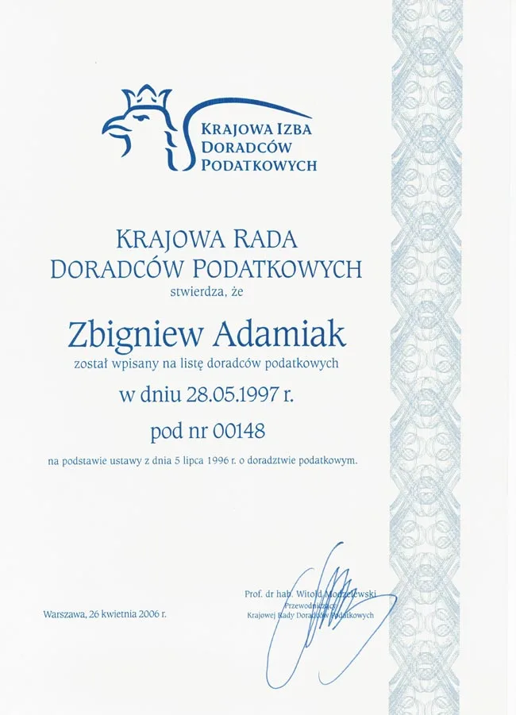

Doradca Podatkowy Zbigniew Adamiak
Kancelaria podatkowa działa od 1995 roku. Jeżeli z jakichkolwiek względów chcesz ustawić barierę między Sobą a fiskusem, poświęć chwilę naszej stronie.
Od 1995 roku
Wieloletnie doświadczenie w sporach z organami podatkowymi.
Reprezentacja przed organami
Zastępstwo procesowe przed wszystkimi organami podatkowymi.
Stała obsługa firm
Prowadzenie ksiąg rachunkowych i podatkowych w ramach umów.
Strona główna
Misja
Naszą misją jest cywilizowanie postępowania podatkowego, odstresowanie podatników i przekonanie organów procesu, iż art. 6 KC nie powinien mieć zastosowania w prawie podatkowym.
Art. 6. [Onus probandi] Ciężar udowodnienia faktu spoczywa na osobie, która z faktu tego wywodzi skutki prawne.
Realizacja usług
Usługi realizowane są w ramach stałych umów lub w przypadku pojedynczych postępowań i kontroli podatkowych.
Księgowość
Kancelaria świadczy również stałe usługi w zakresie prowadzenia ksiąg rachunkowych i podatkowych.
O kancelarii
Usługi kancelarii
- Porady, opinie i wyjaśnienia z zakresu obowiązków podatkowych
- Porady prawne z zakresu prawa pracy
- Audyt podatkowy
- Rejestrację działalności gospodarczej, w tym również spółek prawa handlowego
- Reprezentowanie Podatnika przez wszystkimi organami podatkowymi oraz zastępstwa procesowe
- Prowadzenie ksiąg rachunkowych i podatkowych
- Reprezentowanie Podatnika w postępowaniu egzekucyjnym, starając się by było ono jak najmniej dotkliwe
- Reprezentowanie Podatnika w postępowaniach dotyczących nieujawnionych źródeł dochodu lub nieujawnionych dochodów w ujawnionych źródłach.
Kancelaria ma wieloletnie doświadczenie w pomaganiu Podatnikom podczas sporu z organami podatkowymi. Możemy zająć się również inną, choćby najbardziej nietypową sprawą. Zachęcamy do kontaktu.
Potwierdzenie wpisu

Poznaj swoje prawa
Czy wiesz, że...
- Jeżeli w trakcie postępowania podatkowego (kontroli podatkowej) jesteś wzywany na przesłuchanie w charakterze strony, to możesz nie wyrazić zgody na to przesłuchanie, gdyby przykładowo miało ono pogorszyć Twoją sytuację podatkową?
- Nie musisz sporządzać jakichkolwiek dodatkowych zestawień w trakcie kontroli? Jeżeli są one potrzebne organowi, to jest on zobowiązany sporządzić je sam na podstawie przedłożonych przez Ciebie dokumentów i ewidencji. Nie daj się zastraszyć groźbą potencjalnej kary pieniężnej.
- Jeśli z jakichś powodów upłynął termin do złożenia przez Ciebie odwołania od niekorzystnej decyzji podatkowej, to są jeszcze inne instytucje procesowe aby ją uchylić? Przykładem może być stwierdzenie nieważności.
Kontakt
Kancelaria Doradcy Podatkowego
Zbigniew Adamiak
Nr wpisu 00148
ul. 1 Maja 3B
98-220 Zduńska Wola
Kancelaria jest czynna od poniedziałku do piątku w godzinach 7.00 – 15.00
e-mail: adamiak@adamiak.biz
Wskazówki dojazdu
Adres kancelarii
Kancelaria Doradcy Podatkowego
Zbigniew Adamiak
Nr wpisu 00148
ul. 1 Maja 3B
98-220 Zduńska Wola
Plus Code: H2G5+GH Zduńska Wola